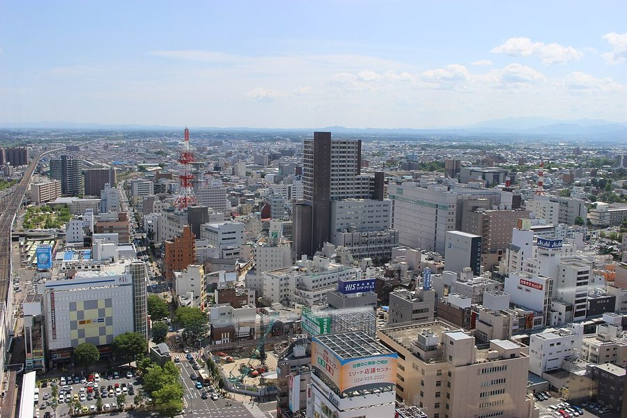
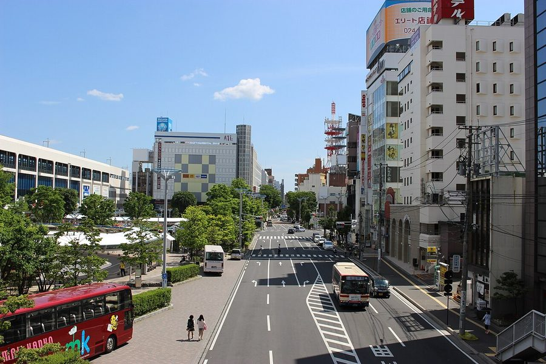
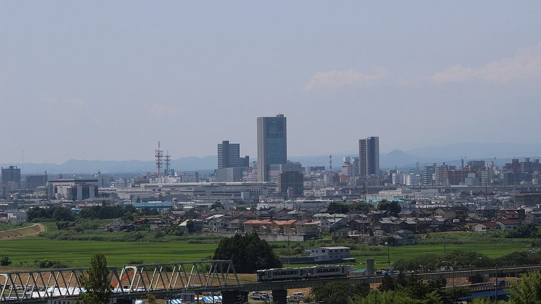
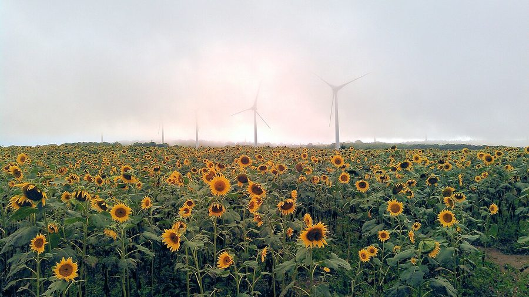

福島県郡山市の日帰り温泉・銭湯・サウナ（36件）
寄り道スポット検索アプリ「ヨッテコ」の収録データから、福島県郡山市の日帰り温泉・銭湯・サウナを営業時間・料金つきで一覧にしました（2026年8月時点）。
最も安いのはあさかの杜 クア温泉館（400円）。最も遅くまで入れるのは離れの宿 よもぎ埜（24:00まで）。朝風呂なら100%かけ流しの天然温泉 なりた温泉（6:00開店）。
福島県郡山市はどんなまち？
数字で見る🔍福島県郡山市
まちの横顔




- 地形と気候: 郡山市は福島県中央部の安積原野（郡山盆地）に広がる海抜245メートルの平坦地に市街地を形成しています。西に猪苗代湖、東に阿武隈山地、北に安達太良山を望み、市の中心部を阿武隈川が南から北へ流れます。気候は温暖湿潤気候で、年平均気温は12.4℃、年間降水量は1,143.3ミリ、年間日照時間は1,781.1時間です。降雪量が多く、旧・湖南村は豪雪地帯に指定されています。
- 商都としての発展: 江戸時代の郡山宿は人口5,000人ほどの、水不足で原野が広がる土地でした。明治時代に猪苗代湖の水を農業用水として引く安積疏水が開かれたことで開拓と都市化が進み、この疏水は大久保利通主導による日本初の大規模国家プロジェクトで、2016年に日本遺産に指定されています。現在は東北新幹線・東北本線・東北自動車道・国道4号が集まる交通の十字路として発展し、東北地方有数の商工業都市として「商都」「経済県都」とも呼ばれています。
寄り道充実度（全国偏差値）
偏差値・順位は、ヨッテコ収録データ（2026年8月時点・26,033件）を市区町村別に集計した施設数の全国分布（1,728市区町村）から毎回算出しています。カードを押すとカテゴリ別の分析に切り替わります。
日帰り温泉から見た福島県郡山市
市内の日帰り温泉は36件、全国51位タイ（上位3.0%）。——数のうえでは、はっきり湯の多いまち。
- 61%の店に露天風呂があります。全国水準は46%です。西に猪苗代湖、東に阿武隈山地を望み、阿武隈川が貫く安積盆地の市。屋根のない湯船が当たり前、という土地柄なのでしょうか。
- 天然温泉を使う店は86%、全国水準（67%）の1.3倍。86%が天然温泉という構成は、地下から湧くものの豊かさを映しています。
出典: 施設データ=ヨッテコ収録データ（26,033件・2026年8月時点）。偏差値・全国順位・全国水準は全1,728市区町村の分布から毎回算出。 / 人口=総務省「住民基本台帳に基づく人口、人口動態及び世帯数」（2026年1月1日現在） / 面積=国土地理院「全国都道府県市区町村別面積調」（2026年4月1日時点） / 森林率=農林水産省「2025年農林業センサス（農山村地域調査）」市区町村別林野率（2025年、林野率（林野面積÷総土地面積）） / 年平均気温=気象庁「平年値（1991-2020年）」。市区町村の代表点（国土交通省「大字・町丁目レベル位置参照情報」）から最も近い観測点の値 / まちの解説=日本語版Wikipedia「郡山市」（https://ja.wikipedia.org/wiki/郡山市、2026年8月21日取得）より作成（CC BY-SA 4.0） / 写真=Wikimedia Commons（各キャプションに作者・ライセンスを記載）
曜日別の営業施設数
| 月 | 火 | 水 | 木 | 金 | 土 | 日 |
|---|---|---|---|---|---|---|
| 35 | 34 | 34 | 35 | 36 | 36 | 35 |
火・水曜日が最も休みが多く（各2件が定休）、年中無休は31件です。※営業時間データのある36件で集計
入浴料金の分布（大人）
| 500円以下 | 4件 | |
| 501〜800円 | 14件 | |
| 801〜1,200円 | 5件 | |
| 1,201円以上 | 5件 |
料金が確認できた28件で集計。
施設一覧
| 施設 | 営業時間 | 料金（大人） |
|---|---|---|
| 100%かけ流しの天然温泉 なりた温泉 天然温泉露天風呂サウナ 宿場町として栄えた郡山市にある天然温泉。湯量豊富な源泉で気取らない雰囲気が好評。 | 06:00〜23:00 | 600円 |
| KORIYAMA STATION SAUNA 郡山ステーションサウナ サウナ 郡山駅から徒歩8分の全室檜造プライベートサウナ。完全貸切で、檜風呂と水風呂で極上のととのい体験ができます。 | 15:00〜24:00 ※曜日により異なる | — |
| OUSE Camp&Sauna TUULI（トゥーリ） サウナ | 10:00〜22:00 | — |
| あさかの杜 クア温泉館 天然温泉露天風呂 郡山市最大級の湧出量を誇る天然温泉で、源泉かけ流しの大浴場。無料休憩所があり地域住民に親しまれている。 | 09:30〜18:30 | 400円 |
| うねめ温泉 天然温泉 | 06:00〜23:00 | 500円 |
| こおりやま 駅前サウナ24 サウナ | 00:00〜24:00 | 3,000円 |
| やすらぎの宿 郡山三穂田温泉 天然温泉露天風呂サウナ | 06:00〜22:00 | — |
| スーパー銭湯 遊湯ランド サウナ | 08:00〜22:00 | 650円 |
| ドーミーインEXPRESS郡山 磐梯の湯 天然温泉露天風呂サウナ | 15:00〜20:00 ※曜日により異なる | 800円 |
| ホテルシーアンドアイ郡山 あさかの湯 天然温泉露天風呂サウナ | 11:00〜18:00 ※曜日により異なる | — |
| ホテルバーデン バーデン温泉 天然温泉露天風呂サウナ | 10:00〜22:00 | 800円 |
| ホテル華の湯 天然温泉露天風呂 磐梯熱海温泉にあるホテル。毎分427リットル、1日約615トンの豊富な湯量を誇る天然温泉と、複数の趣の異なるお風呂が自慢… | 10:00〜18:00 ※曜日により異なる | 1,500円 |
| 並木温泉 ゆの郷 天然温泉サウナ | 08:00〜22:00 | 660円 |
| 中津川温泉 藤屋旅館 ザクの湯 天然温泉 | 08:00〜21:00 | 700円 |
| 休石温泉 太田屋 天然温泉露天風呂 源泉かけ流しの天然温泉を利用した温泉旅館。男女別の露天風呂と内湯、および宿泊者専用の貸切家族風呂を備えている。 | 09:00〜20:00 | 700円 |
| 健康温泉 水林亭 天然温泉露天風呂 源泉掛け流しの温泉と貴重なラジウム岩盤浴が特徴。板前手作りの料理で地元食材を使用。 | 10:00〜16:00（日休） | 500円 |
| 天然温泉 極楽湯 福島郡山店 天然温泉露天風呂サウナ 郡山八山田温泉を使った天然温泉スーパー銭湯。24時間営業で日帰り入浴が気軽に楽しめます。 | 07:00〜24:00 | 770円 |
| 守山温泉 白水館 天然温泉 | 08:00〜19:00 | — |
| 市民福祉センター サニーランド湖南 天然温泉 地下約700メートルから湧き出るアルカリ性単純泉を使用した市民福祉施設。肩こりや神経痛などの効能で知られている。 | 09:30〜19:00 | 450円 |
| 幻灯庵 月の庭 天然温泉露天風呂 幻灯庵 月の庭公式ウェブサイト（宴会・ご法要プランページ） | 10:00〜16:00 | — |
| 数寄屋造り 万葉の宿 八景園 天然温泉露天風呂 | 14:00〜17:00 | 1,000円 |
| 月光温泉クアハイム 天然温泉露天風呂サウナ 郡山市の天然温泉。含食塩‐芒硝泉で、神経痛や疲労回復に効果的。男性・女性露天風呂、サウナ、うたせ湯を完備。 | 08:00〜24:00 | 1,700円 |
| 梯熱海温泉 萩姫の湯 錦星湯（きんせいゆ） 天然温泉 | 16:00〜19:30（水休） | 600円 |
| 深山荘 天然温泉 貸切温泉の宿。 | 09:00〜18:00 | — |
| 温泉プチホテル 湯kori 磐梯熱海 天然温泉 100%源泉掛け流しのアルカリ性単純温泉。昭和37年創業の旅館をリノベーションした温泉プチホテル。 | 11:00〜21:00 ※曜日により異なる | 700円 |
| 湯のやど 楽山 天然温泉露天風呂 露天大岩、陶器露天、釜風呂などの複数浴槽。 | 10:00〜19:00 | 1,000円 |
| 源田温泉郷 forestバン源田 天然温泉露天風呂 公式ウェブサイトの日帰り入浴情報ページ | 10:00〜19:00（火・水休） | 700円 |
| 磐梯熱海温泉 共同湯 霊泉元湯 天然温泉 開業100周年を迎えた共同湯「霊泉」元湯。JR磐梯熱海駅から徒歩1分の立地で、皮膚病に効く名湯として知られる。 | 06:00〜20:00 | 600円 |
| 磐梯熱海温泉 山城屋 天然温泉露天風呂 山城屋旅館の公式日帰り温泉プランページ | 11:00〜20:00 | 1,000円 |
| 磐梯熱海温泉 紅葉館きらくや 天然温泉露天風呂サウナ 磐梯熱海温泉の旅館で、低価格の一泊朝食プランが特徴。美肌の湯として評判の温泉と展望貸切露天風呂が売り。 | 10:30〜17:00（木休） | 1,000円 |
| 萩姫の湯 栄楽館 天然温泉露天風呂 磐梯熱海温泉の高地にある旅館の日帰り温泉。pH値の高いアルカリ泉で、肌がツルツルになる美人の湯として評判。 | 07:00〜18:00 | 1,200円 |
| 貸切ミニログハウスサウナ Well-being サウナ 郡山中心市街地のミニログハウス貸切サウナ。テラヘルツ鉱石を使用した独自のサウナストーンで、深い温かみを体感できます。 | 10:00〜22:00 | 3,850円 |
| 郡山やすらぎ温泉 天然温泉露天風呂サウナ | 10:00〜21:00 | — |
| 郡山ユラックス熱海 天然温泉露天風呂サウナ | 09:00〜21:00 | 600円 |
| 郡山温泉 天然温泉露天風呂サウナ | 09:00〜21:00 | 600円 |
| 離れの宿 よもぎ埜 天然温泉露天風呂 | 15:00〜24:00 | 1,650円 |